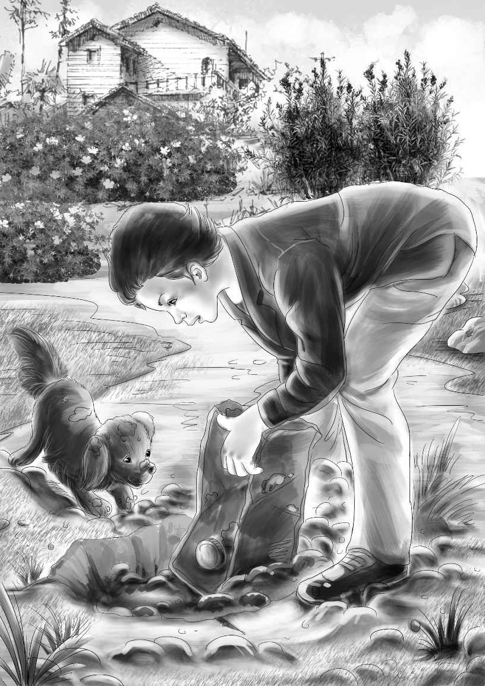

When Spot came up with the hat in his mouth,Benny cried,"The blue hat at last!"
"The man was afraid to wear it," shouted Mike.
"This proves that the man was up to no good," said Henry slowly.
"And he is the man in the picture!" shouted Mike again. "And this time I would know him for sure. "
"I think he knows that,"said Jessie. "We must tell Mr. Carter all about this. "
"Well,Jessie,I'm sure Mr. Carter knows it already," said Benny.
Mike looked at Benny with a frown. The frown said,"Benny,don't talk too much. "
Henry said,"Well,let's give the dogs the bones and go up and see Mr. Carter. "
But they did not go. Watch suddenly began to dig again. Then the children noticed that the ground was soft. It did not take long. Watch did not growl,but soon he hit something hard. Henry leaned down and pulled out a big empty gasoline can.
"What do you know!" said Henry. "Lucky we found this. The man must have poured gasoline on the fire. "
"Spotty must have seen him come into the cellar," said Mike. "That's why he didn't like him. "
They all walked slowly to the mine office. They went in and told Mr. Carter all about the race.
"Which dog won the race?" asked Mr. Carter,laughing.

"Neither one," answered Mike. Then he told them about the dogs turning around to dig. He showed him the hat and the can.
"This is very,very important," cried Mr. Carter. "You have done very well. It won't be long now. "
Then Benny suddenly opened his mouth. He looked at Mike and shut it again. Mike nodded,smiling.
When the two boys went out of the office,Benny whispered to Mike,"You remember Mr. McCarthy? The night watchman? He said he started to go to the fire that night. "
"Yes," said Mike. "And he came right back,because he saw a man running,and his duty was right by the mine. "
"That's right," said Benny. "You see what that means?"
"Oh,Ben," cried Mike. "I bet that man was going to blow up the mine! And he set the fire to get everybody to go to the fire!"
"Right!" said Benny. "I think we ought to tell Mr. Carter right away. It's neat!"
The boys went back alone. When they told this new story to Mr. Carter,he said,"Good for you,boys! It's a fine idea. I shall go right to work. I'll put two good men to work on it. "
The boys were very pleased with themselves.
"We are working with the FBI,really,Ben," said Mike proudly.
"And I suppose the most important thing is not to talk," added Benny.
"I suppose so," said Mike sadly. "It's too bad we like to talk,Ben. "
When the children came home to supper,Aunt Jane was delighted. She loved to hear them all talk. Maggie laughed and laughed at Mike and Benny,but they were careful what they said.
The children ate everything on the table. They ate hamburgers and rolls and tomatoes and beans and corn,and they drank many glasses of milk.
When everything was gone,Benny said,"Aunt Jane,did you know Mike could stand on his head?"
"No,I did not," said Aunt Jane.
"He can stand on his head forever," said Benny.
"Now,Benny,not forever," said Henry.
"But you never saw him," said Benny.
"I'll show you!" cried Mike. He put his head on the rug,and slowly lifted himself in the air.
"Good!" cried Aunt Jane. "That's wonderful,Mike. "
Spotty went over to his young master,lay down and put his head on his paws. He shut his eyes.
"Spotty thinks you are going to stay there forever,Mike," said Jessie.
"I am," said Mike. His voice sounded funny,upside down.
"That's enough,old boy," said Henry. "Come on down!"
"Oh,no," cried Benny. "He can stand there forever,I tell you!"
"But I don't want him to stand there forever," said Aunt Jane. She could not help laughing. "It isn't good for you,Mike!"
"Why not?" asked Mike. "I don't mind. "
"Yes," said Benny,nodding his head. "Mike can stay there all night,unless he goes to sleep. "
"I could go to sleep standing on my head," said Mike,upside down.
"Oh,come on,Mike," said Henry. "Get up! You've been there long enough!"
But Mike did not move. "I'm very comfortable," he said. "You can all read a book. And I'll just stand on my head and rest. "
At last Aunt Jane begged him to stop. "Please,Mike!"she said. "I believe you can stand there a long time. "
"All night?" asked Mike. "Do you believe I could stand there all night?"
"Yes! Yes!" cried Aunt Jane. "Only do come down! It's a wonderful trick. "
So Mike stood on his feet at last,and fixed his hair. "I could have stayed there a lot longer," he said.
Then Henry made Watch do his tricks. Watch sat up and begged. He "spoke. " He was a "dead" dog. He shook hands with everybody. Then Maggie gave him a big bone.
The boys did tricks all the evening. They had only two fights. Then Mike said suddenly,"Aunt Jane—" Then he stopped.
"Go on," said Aunt Jane.
"Well,I ought to say,Miss Alden," said Mike.
"No,you call me Aunt Jane. I wish you would. "
So Mike went on. "Aunt Jane,you gave me that newspaper,you know. "
"Yes,I did. "
"Well,you said you didn't look at it. Will you look at it now?"
"Certainly I will,if you want me to," said the lady.
"It's just the picture," said Mike,taking it out of his pocket. "Just look at my brother,Pat,and remember I was right here,standing beside him. But the picture cut me off. " Mike pointed. He gave the picture to Aunt Jane.
But Aunt Jane suddenly saw the picture of the short man. She frowned. Then she cried,"I know that man! He is one of the men who tried to buy my ranch. I'd know him anywhere!"
Henry was excited. "That was last summer. It was the time you were alone in the house. We all went to the store,and the men came while we were away. Are you sure,Aunt Jane?"
"Of course I'm sure!" cried Aunt Jane. "I never liked those three men. I'd know them anywhere. "
"Well,Mike,what do you think about that!" shouted Benny.
Just then the telephone rang. It was for Benny.
"Hello," said Benny.
"This is Mr. Carter," said the voice. "You can tell the rest about this. We found a lot of wires behind the mine. Someone was going to blow it up. Thanks to you and Mike,we got the wires out. "
"Good!" said Benny. "And listen to this! Aunt Jane knows the man in the picture. He is the man that just got out of jail,I bet. "
"What? What? I'll be right down," said Mr. Carter.
When he came down,he asked Aunt Jane many questions. At last he said,"We know the man,and we can prove it. I don't think it will be very long now. We just have to find him. "